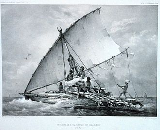
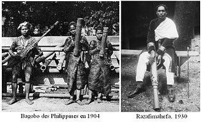

Conquete Française
Sommaire

geographie:
histoire:
- Epoque coloniale:
- Independance vers 1960
- Vers la 3eme republique
economie:
Acceuil
Histoire
Indépendance
De la France
Date
26 juin 1960
Histoire
Au tout début du peuplement, appelée « période paléomalgache », les Ntaolo se subdivisèrent, selon leurs choix de subsistance, en deux grands groupes : les Vazimba (de *ba/va-yimba-« ceux de la forêt », de *yimba-« forêt » en proto Sud-Est Barito (SEB), aujourd'hui barimba ou orang rimba en malais23) qui s'installèrent - comme leur nom l'indique - dans les forêts de l'intérieur et les Vezo (de *ba/va/be/ve-jau, « ceux de la côte » en proto-Malayo-Javanais, aujourd'hui veju en bugis et bejau en malais, bajo en javanais24) qui restèrent sur la côte Ouest. Le qualificatif Vazimba désignait donc à l'origine les Ntaolo chasseurs et/ou cueilleurs qui décidèrent de s'établir « dans la forêt », notamment dans les forêts des hauts plateaux centraux de la Grande Île et celles de la côte Est et Sud-Est25, tandis que les Vezo étaient les Ntaolo pêcheurs qui restèrent sur les côtes de l'Ouest et du Sud (probablement les côtes du premier débarquement)26. Notons ici un débat fondamental parmi la communauté des chercheurs : le mot vazimba étant un qualificatif austronésien désignant les « habitants de la forêt » d'une manière générale (y compris les Austronésiens eux-mêmes qui s'installèrent dans les forêts), il n'est pas à exclure que d'autres hominidés vazimba aborigènes, de type homme de Florès par exemple, aient habité dans les forêts de Madagascar des dizaines - voire des centaines - de milliers d'années avant l'arrivée des vazimba austronésiens. Quelques-uns ont peut-être encore existé à l'arrivée des vahoaka ntaolo austronésiens au premier millénaire avant notre ère. Ceci pourrait expliquer le mythe des « petits hommes/nains primaires de la forêt » que les vahoaka ntaolo austronésiens - ancêtre de la majorité des malgaches actuels - auraient rencontré et assimilé (ou peut-être décimé) à leur arrivée. Les preuves irréfutables sous-tendant ce mythe manquent encore aujourd'hui. Seuls l'archéologie et la génétique pourront les apporter. Enfin, il n'est pas à exclure non plus que le mythe des « vazimba-petits hommes/nains » ait été emmené par les Austronésiens à partir des îles où ils habitaient auparavant, auquel cas ce mythe pourrait effectivement concerner les hominidés de type « Florès » ou Négrito (orang asli en malais) .Ces derniers, de petite taille, ont en effet habité les forêts des îles de la Sonde bien avant l'arrivée des Austronésiens et y sont considérés comme étant les peuples aborigènes. On sait par exemple que le mythe de l'ogre « Trimo be - mangeur d'enfant » est un conte emmené par les Austronésiens et parle en fait du tigre (de * (t)rimu, « tigre » en proto-MP) qui habite les forêts des îles de la Sonde. Le mythe des « petits nains vazimba » pourrait avoir subi un voyage similaire. Des simulations sur ordinateur de la navigation entre l'Indonésie et Madagascar permettent de comprendre les itinéraires possibles qui ont amené à la colonisation de Madagascar par des Austronésiens à partir du début de notre ère. Les Maldives, et dans une moindre mesure les Chagos voisines, étaient une escale probable sur la route de Madagascar, aussi bien depuis Sumatra que depuis le sud de l'Inde et Sri Lanka, où des marins et marchands javanais et malais se rendaient pour le commerce27. Quant à la cause de la venue de ces Austronésiens, l’histoire de l'océan Indien du début du premier millénaire de notre ère est encore très mal connue. On peut seulement supposer que l’île de Madagascar joua un rôle important dans le commerce, notamment celui des épices, entre l’Asie du Sud-Est et le Moyen-Orient, directement ou via les côtes africaines. Il se peut notamment que ces vahoaka ntaolo aient en particulier recherché du bois solide pour construire leurs canoës, tel le vintana (un nom que l'on trouve encore aujourd'hui dans le vinta des canoës Bajau, homonyme contemporains des Vezo).
Conquête française
Avant la colonisation connue de tous et développée ci-dessous, un homme fut nommé premier Consul de France à Madagascar, sous le second-empire: Jean Laborde,le 12 avril 1862.Il est le précepteur du futur Roi Radama, mais aussi confident des missionnaires, initiateur de l'industrie malgache et amant de la reine cruelle et xénophobe Ranavalona Ière. Ce n'est véritablement qu'à la fin du xixe siècle, lors du partage de l'Afrique par les Européens à la conférence de Berlin (1884-1885), que sonne le glas de l'expansion et de l'indépendance du Royaume de Madagascar. Les politiciens malgaches jouaient jusqu'alors sur les rivalités des puissances occidentales pour conserver leur souveraineté. Le traité de Berlin attribue l'île à la France (position stratégique face aux Anglais, dans l’océan Indien). La France signe alors un traité avec le Royaume de Madagascar qui repose sur l'ambiguïté de la langue malgache et qui ne donne théoriquement aucun droit à la République française sur le Royaume de Madagascar. Mais, au fil des incidents diplomatiques, la France mène une politique de plus en plus agressive32, puis entreprend la conquête de l'île.La résistance est massive, l'armée malgache parvient à repousser les premières vagues d'invasion en 1883 mais les combats décisifs suivront. Ils sont connus sous le nom de « deuxième guerre Franco-Malgache ». De son côté, le gouvernement français envoie une armée de conscrits mal préparés qui progresse très lentement, la maladie faisant des ravages. On parle de 30 % de pertes liées aux maladies tropicales.